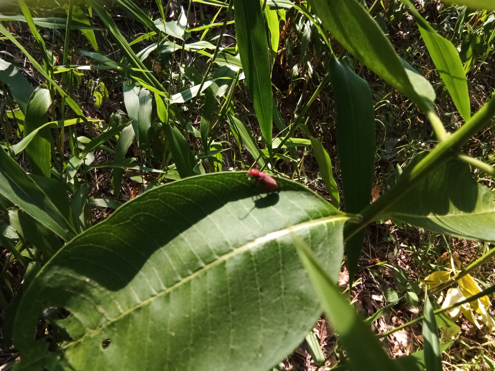
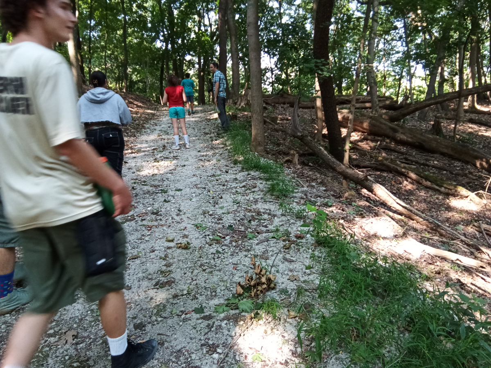

We found the dead bird on the trail during our hike. We were informed by our guide, Ranger Merna, that it was most likely killed by a stray cat or outdoor cat. The second image was taken to show what the trail looked like. The third is a close-up of a wild raspberry vine.
Nature Sounds
Share the sounds of nature
Crickets
Crickets chirping through the forest underbelly.
Birdsong
Birds singing through throughout the forest
Cicadas
The heartbeat of the forest.

Word Collections
Language the experience of nature
Place your collected words in here: Nipple wart * Milk weed * Oriental false hawks beard * Pileated wood pecker * Shagbark hickory * yellow belly sap suckers *
Pileated wood
Orientaly false hawks
What is life these days?
Nature's Wonders with Finn
Interview another student about their experiences and learning

Talk with Linus, our "nature expert"
About my interview?
In this podcast, we will discuss certain aspects of Nature with our expert Linus.